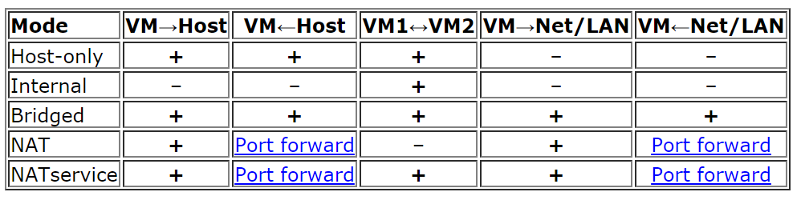

Implantación de soluciones de alta disponibilidad¶
Definición y objetivos.¶
En el tema «Pautas de seguridad informática» definíamos disponibilidad de la siguiente manera: capacidad de respuesta a una peticiones con las mínimas pausas por causas involuntarias .
También decíamos que se mide la disponibilidad de un SI en «nueves».
- Se dice que un SI ofrece una disponibilidad de «2 nueves», si está disponible el 99% del tiempo.
- Se dice que un SI ofrece una disponibilidad de «3 nueves», si lo está al 99.9%.
- Se dice que un SI ofrece una disponibilidad de «4 nueves» si lo está al 99.99%.
- Se dice que un SI ofrece una disponibilidad de «5 nueves» si lo está al 99.999%
Evidentemente lograr una disponibilidad del 100% es imposible pero en este bloque analizaremos como lograr la máxima disponibilidad en un entorno informático.
Virtualización de sistemas.¶
- No conectado.
- NAT: Network Address Translation es el proceso por el cual una máquina intercepta las peticiones de red de otra y las efectúa en su lugar (sustituyendo la IP). Cuando llega la respuesta, la máquina interceptora modifica esa respuesta para que la IP de destino sea la de la máquina interceptada. En el caso de VirtualBox el modo NAT hace que el programa VirtualBox “intercepte” las peticiones que salen desde el SO “invitado”. Si algún ordenador de fuera desea iniciar una conexión hacia el SO invitado, VirtualBox prohibirá dicha conexión. Será necesario abrir puertos.
- Red NAT: Facilita la creación de servidores protegidos detrás de un servicio NAT. Supongamos que queremos un servidor HTTP y uno FTP. Podríamos ponerlos en dos máquinas virtuales cada una con su NAT. Pero esto implicaría «tratar a las máquinas por separado». Creando una red NAT podemos simplificar un poco la apertura de puertos trabajando con una sola red NAT.
- Bridge/adaptador puente: el SO invitado no tendrá ninguna restricción y se portará como uno más de la red. El SO invitado necesitará su propia IP separada y distinta del anfitrión.
- Red interna: En este modo podemos crear «redes ficticias que no se ven desde fuera del anfitrión». Consiste en crear redes con un cierto nombre y los distintos invitados que estén asociados a esa «red ficticia» podrán verse entre sí pero no podrán salir al exterior.
- Solo anfitrión: el invitado solo “ve” al anfitrión.
- Red genérica: solo se usará cuando virtualicemos sistemas operativos que no tengan drivers para alguna de las tarjetas
En la figura siguiente, sacada de la web de VirtualBox se ilustra «quien puede ver a quien»

{kind=link}
Modos de red en VirtualBox